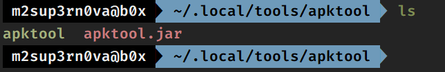
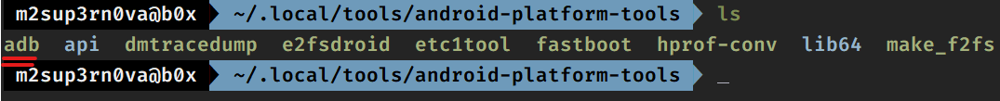
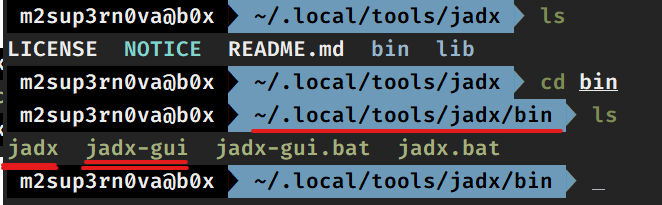
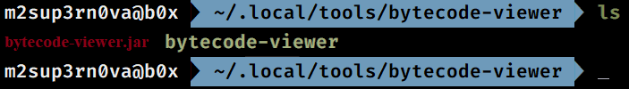
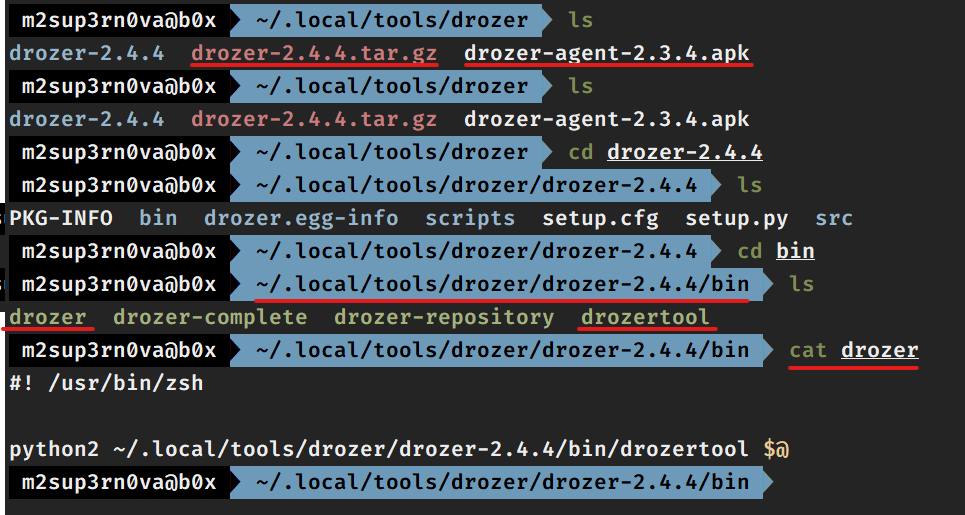
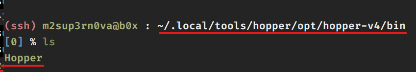
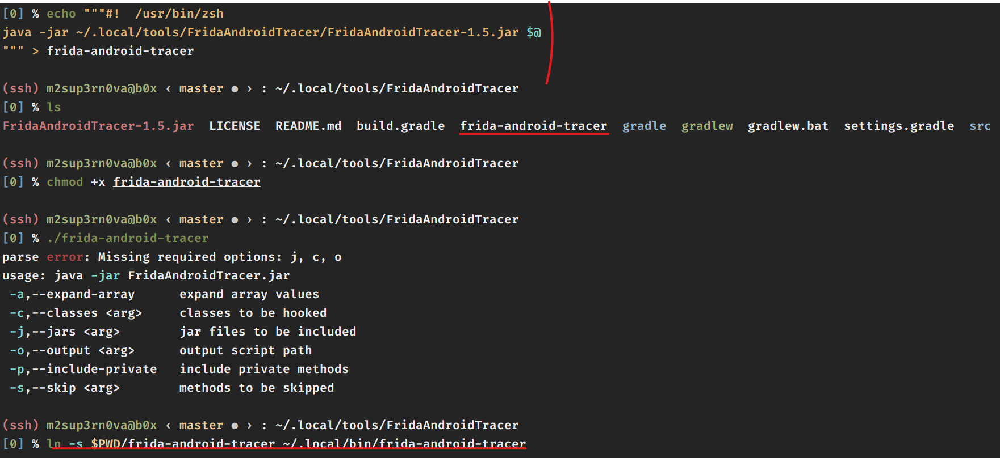
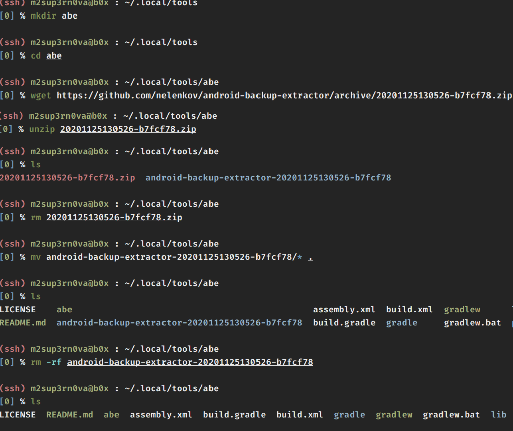
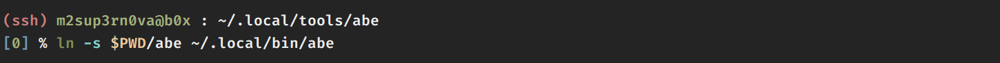
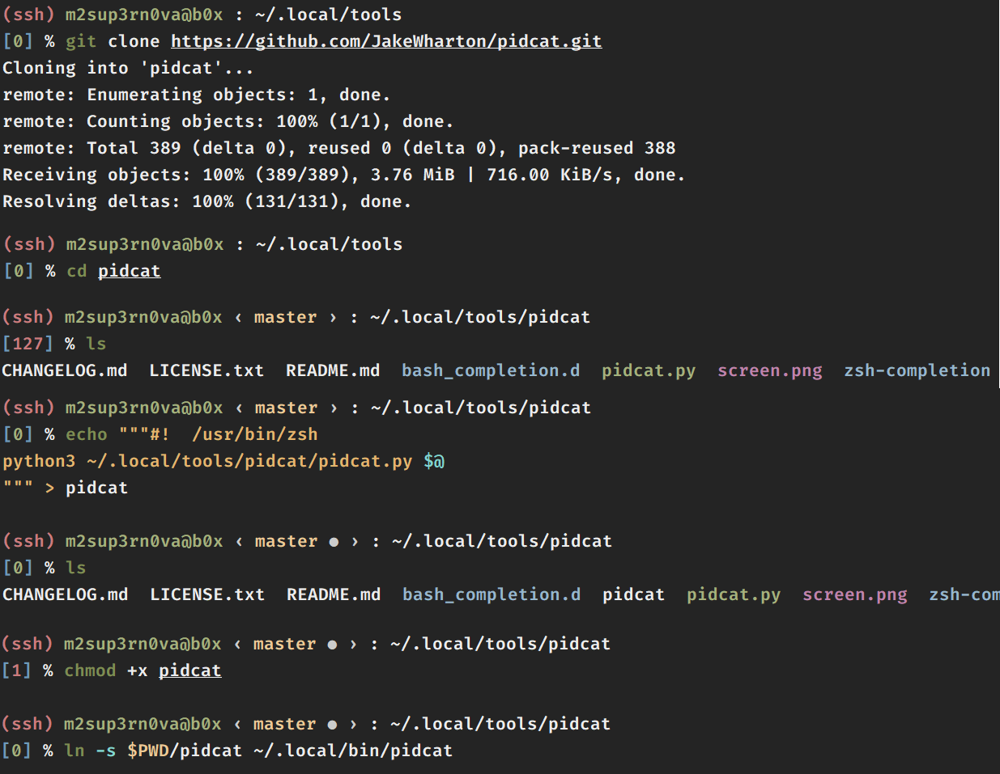

Owner : 🧛🏻♂️ - Mr. Sup3rN0va | 09-February-2021
Tags : #i0S (📲), #android (📱), #pentesting (👨🏼💻), #tools (⚒), #cheatsheet (📜)
NOTE: We will be installing most of our tools in
~/.localfolder. By default,fridauses this folder to installfrida-tools.
mkdir $HOME/.local/tools$HOME/.local/binTool for unpacking APK
Download the latest jar file from : APKTOOL.JAR
Reference : APKTOOL
Create a new folder : mkdir -p ~/.local/tools/apktool and save the jar in this folder
Rename the downloaded jar as apktool.jar
Create a new file called apktool and add lines
#! /bin/bash
java -jar ~/.local/tools/apktool/apktool.jar $@
To create softlink : ln -s $PWD/apktool ~/.local/bin/apktool
Also run : chmod +x $PWD/apktool to make it executable
Now you can run the command apktool from anywhere

Tool to communicate with emulator and real android device for debugging and testing purposes
Download the latest zip file from : PLATFORM-TOOLS and create a new folder mkdir -p ~/.local/tools/android-platform-tools and save the downloaded zip in this
Extract the zip in the same folder and delete the zip. Run : mv platform-tools/* . and then remove rmdir platform-tools
To create softlink : ln -s $PWD/adb ~/.local/bin/adb
Now you can run the command adb from anywhere

Tool to unpack APK and convert the dex created in equivalent java class file
Download the latest zip file from : JADX and create a new folder mkdir -p ~/.local/tools/jadx and save the downloaded zip in this
Extract the zip in the same folder and delete the zip
cd ~/.local/tools/jadx/bin and create softlink : ln -s $PWD/jadx-gui ~/.local/bin/jadx-gui
Now you can run jadx-gui from anywhere

Advanced Lightweight Java Bytecode Viewer for Android
Download the latest jar file from : ByteCode-Viewer
Create a new folder : mkdir -p ~/.local/tools/bytecode-viewer and save the jar in this folder
Rename the downloaded jar as bytecode-viewer.jar
Create a new file called bytecode-viewer and add lines
#! /bin/bash
java -jar ~/.local/tools/bytecode-viewer/bytecode-viewer.jar $@
To create softlink : ln -s $PWD/bytecode-viewer ~/.local/bin/bytecode-viewer
Also run : chmod +x $PWD/bytecode-viewer to make it executable
Now you can run the command bytecode-viewer from anywhere

Before installing drozer, we need to install some pre-requisites
sudo apt install python2 -y
After this install python2-pip as : wget https://bootstrap.pypa.io/2.7/get-pip.py && python2 get-pip.py
Then install : pip2 install protobuf pyopenssl twisted
You can see the list of pre-requisites from : Drozer
Once done, download the latest tar.gz file from : Drozer Releases and extract in the folder mkdir -p ~/.local/tools/drozer
Also download agent apk from Drozer Agent in the same folder
Extract the tar file as : tar -xvf drozer-2.4.4.tar.gz and rm drozer-2.4.4.tar.gz
cd ~/.local/tools/drozer/drozer-2.4.4/bin and run mv drozer drozertool
Create a new file in the same folder called drozer and edit it
#! /bin/bash
python2 ~/.local/tools/drozer/drozer-2.4.4/bin/drozertool $@
Create softlink : ln -s $PWD/drozer ~/.local/bin/drozer
Also run : chmod +x $PWD/drozer to make it executable
Now you can run drozer from anywhere

Hopper is a disassembler and debugger that runs on Mac OS X or Linux, but not Windows. It has similar functionality to IDA Pro but costs 10x less. And the free version works on 64-bit executables.
Pre-Requisites
sudo apt update
sudo apt install libqt5gui5 libqt5xml5 libqt5printsupport5 libqt5network5 libqt5core5a libqt5dbus5 libxcb-xinerama0 qtbase5-dev libqt5svg5 qt5-gtk-platformtheme libqt5dbus5 libqt5widgets5 libdouble-conversion3 qttranslations5-l10n libpython2.7 -y
Get the tar.xz file from Hopper
Note : Not sure why deb has issues while installing it on Ubuntu and it broke my apt too. So best option is to use tar.xz file, extract and run the executable
Note : If the apt is broken then, you can run commands :
rm -rf /var/lib/dpkg/info/hopper-*andrm -rf /var/lib/apt/lists/*and re-runapt-update
Create a new folder mkdir -p ~/.local/tools/hopper and save the downloaded file in this folder
Extract the downloaded file and follow the path in screenshot to get to hopper

Create a softlink to access it from anywhere : ln -s $PWD/Hopper ~/.local/bin/hopper
Android StudioSimple Installation
pip3 install -U frida frida-tools
Generates Javascript hook scripts to hook Android classes
Git clone the repo : git clone https://github.com/Piasy/FridaAndroidTracer.git in ~/.local/tools
To create softlink

Utility to extract and repack Android backups created with adb backup
Folder : mkdir -p ~/.local/tools/abe and download the latest zip file from ABE and delete the zip
Steps


Enable colorful adb logcat
Steps : Either you can do sudo apt install -y pidcat and restart the shell
OR

Mobile Application Testing framework which can perform DAST and SAST both for Mobile Applications
Steps
sudo apt install python3.8 python3-pip python3-venv wkhtmltopdf -y
cd ~/.local/tools
git clone https://github.com/MobSF/Mobile-Security-Framework-MobSF.git
mv Mobile-Security-Framework-MobSF MobSF
cd MobSF
python3 -m pip install -r requirements.txt
./setup.sh
# Once Installed, Replace IP:PORT with values
./run.sh IP:PORT > /dev/null 2>&1 &
Create softlink: Add your VM Guest IP and random PORT number so that you can access it from host machine's browser
cd ~/.local/tools/MobSF
echo """#! /bin/bash
~/.local/tools/MobSF/run.sh IP:PORT > /dev/null 2>&1 &
""" > mobSF
chmod +x mobSF
ln -s $PWD/mobSF ~/.local/bin/mobsf
Now you can run mobsf from anywhere. Hit mobsf and open browser and type the IP:PORT you set
You can download it's docker image as well
This will be used to generate the POC .apk
cd ~/.local/tools
git clone https://github.com/AndroBugs/AndroBugs_Framework.git
mv AndroBugs_Framework AndroBugs
echo """#! /bin/bash
python2 ~/.local/tools/AndroBugs/androbugs.py $@
""" > androbugs
chmod +x androbugs
ln -s $PWD/androbugs ~/.local/bin/androbugs
Check several security related Android application vulnerabilities, either in source code or packaged APKs
This tool is also capable of creating "Proof-of-Concept" deployable APKs
Steps
pip3 install --user qark
These three tools needs to be installed in combination for convinence because they use npm for installation
npm versions are different for these so will use nvm so as to manage multiple npm versions on our device
Pre-requisites
curl -o- https://raw.githubusercontent.com/nvm-sh/nvm/v0.34.0/install.sh | zsh
# RESTART THE TERMINAL
nvm install 10.23.0
nvm install 12.20.0
RMS Installation
nvm use 10.23.0
node -v && npm -v # Output : v10.23.0 and 6.14.8
cd ~/.local/tools/
git clone https://github.com/m0bilesecurity/RMS-Runtime-Mobile-Security.git
mv RMS-Runtime-Mobile-Security RMS
cd RMS
npm install -g
nano rms.js # Search for `127.0.0.1` and replace it with `0.0.0.0`
# To run
rms
PassionFruit Installation
sudo pip3 install -U pip frida frida-tools
sudo pip3 install -U asn1crypto bcrypt cffi colorama cryptography enum34 idna ipaddress paramiko prompt-toolkit pyasn1 pycparser Pygments PyNaCl scp six tqdm wcwidth
sudo chown -R $USER:$USER $HOME
npm install -g passionfruit --no-optional --unsafe-perm -f
# To run
HOST="<YOUR_VM_IP>" PORT="<ANY_PORT>" passionfruit
Dexcalibur Installation
nvm use 12.20.0
node -v && npm -v # Output : v12.20.0 and 6.14.8
mkdir -p ~/.local/tools/dexcalibur
cd ~/.local/tools/dexcalibur
sudo ln -s /usr/bin/python3 /usr/bin/python
npm install dexcalibur
cd node_modules/dexcalibur
# To run
node dexcalibur.js
One of the best reverse engineering tool you can ever encounter and to add on it's free
You need to get inside the cloned git folder and do all the installations for r2frida using r2pm
Steps
# Getting r2
cd ~/.local/tools/
git clone --recursive https://github.com/radareorg/radare2.git
cd radare2
sys/install.sh
# Getting r2frida - All these should be typed inside the radare2 folder cloned from github
r2pm init
r2pm update
r2pm -ci r2frida
r2pm -l # Listing what all is installed by package manager
MARA stands for Mobile Application Reverse engineering and Analysis Framework
It is a tool that puts together commonly used mobile application reverse engineering and analysis tools, to assist in testing mobile applications against the OWASP mobile security threats
Steps
cd ~/.local/tools
git clone --recursive https://github.com/xtiankisutsa/MARA_Framework.git
cd MARA-Framework
./setup.sh
# To start MARA
./mara.sh
APKiD gives you information about how an APK was made
It identifies many compilers, packers, obfuscators, and other weird stuff
It's PEiD for Android
Steps
pip install --upgrade wheel
pip wheel --wheel-dir=/tmp/yara-python --build-option="build" --build-option="--enable-dex" git+https://github.com/VirusTotal/yara-python.git@v3.11.0
pip install --no-index --find-links=/tmp/yara-python yara-python
pip install apkid
This will help us in forwarding SSH traffic via USB
Pre-requisites:
homebrew or you can install the tools belowsudo apt install -y usbutils libusbmuxd-tools ideviceinstaller libimobiledevice6 libimobiledevice-utils
Extracts unencrypted IPA file from i0S device
Steps
cd ~/.local/tools
git clone https://github.com/AloneMonkey/frida-ios-dump.git
cd frida-ios-dump
sudo -H pip3 install -r requirements.txt --upgrade
# Once installed
iproxy 2222 22
./dump.py <Display Name> or <Bundle identifier>
To check whether the IPA is encrypted or not. On mobile terminal:
SCP the extracted IPA to mobile
Rename it to ZIP with Filza
Extract and get inside the app folder and run the below command
otool -arch all -Vl "HDFC Bank" | grep -A5 LC_ENCRYPT
If "cryptid=0" means not encrypted else encrypted
Runtime Application Instrumentation for iOS
# Because we have multiple versions of NPM installed
nvm use 12.20.0
cd ~/.local/tools/
git clone --recurse-submodules https://github.com/ChiChou/Grapefruit
cd GrapeFruit
npm run installdev
# Run it as
npm run dev
Awesome tool for dynamic analysis
Runs over Frida, so frida is a pre-requisite
You can also re-package your apk or ipa to get MiTM
Steps
# If Frida and Frida-tools are installed from above
python3 -m pip install -U objection
Connecting iDevice
If you are connecting via USB
objection -g RUNNING_APP_NAME explore
If you are connecting via SSH
objection -N -h ipad -p 9000 -g RUNNING_APP_NAME explore
It generally gets installed on path $HOME/.local/bin
Install repositories: BigBoss and build.frida.re
Tools:
From CMD:
apt-get update
apt-get upgrade -y
apt-get install adv-cmds
apt-get install sqlite3
Also in place of class-dump and class-dump-z, preferred method is dsdump, else you need to thin the FAT file using lipo, which is in-build in iOS
sudo snap install scrcpy && pip3 install -U guiscrcpy --user